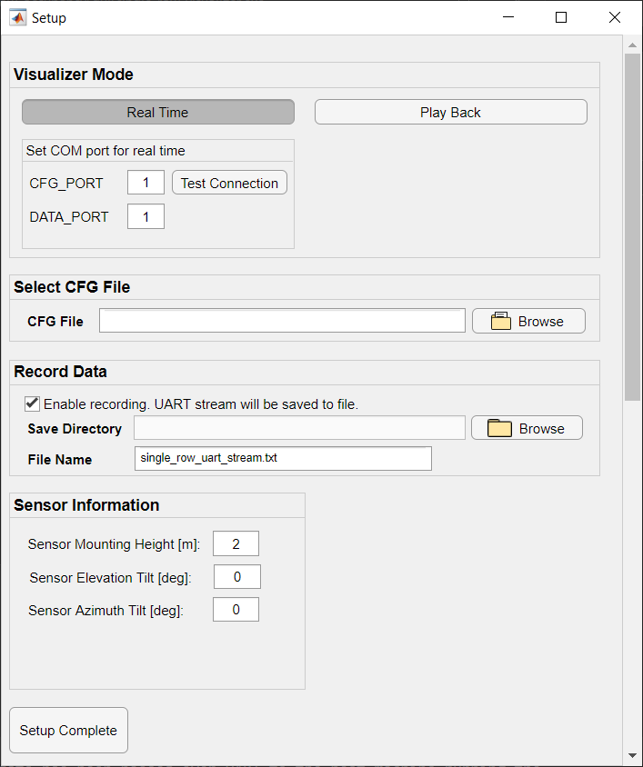
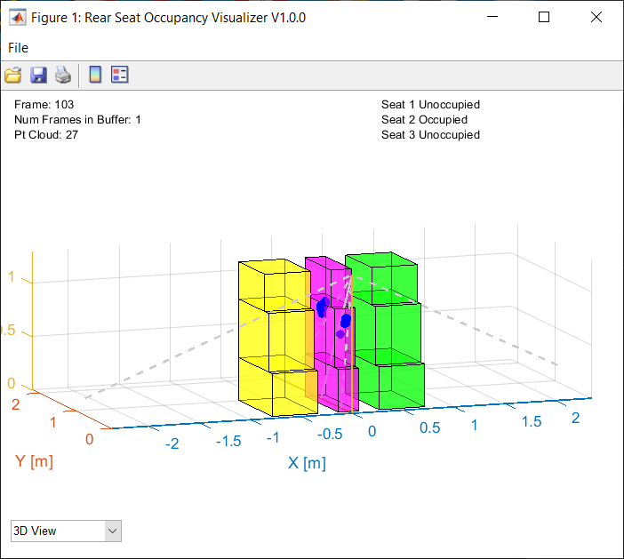
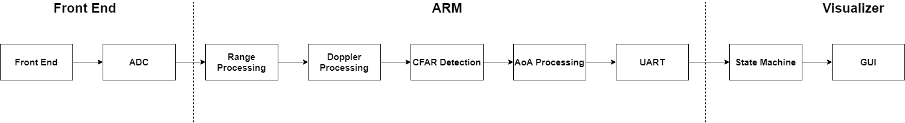

# Overview
This lab demonstrates the use of TI 60GHz mmWave sensors for occupancy detection
(including both adults and babies) for a single row of seats using the xWR6443
sensor module mounted in a vehicle. A 3D point cloud (range-azimuth-elevation) is
produced by generating range-azimuth and azimuth-elevation heatmaps along with
CFAR. Zone mapping uses cuboid volumes and state machine algorithms run to
produce zone occupancy decisions in the accompanying MATLAB visualizer.
**NOTE**: This demo is compatible with both the xWR6443 and xWR6843, as it only
uses the on-chip Hardware FFT acclerator (HWA) and does not utilize the on-chip
c674x DSP. While this demo is intended for the xWR6443 device, a xWR6843 device
can be used for emulation.
# Requirements
## Hardware Requirements
Item | Details
--------------------------|-----------------
xWR6843ISK Antenna Module Board | [xWR6843ISK ES2.0 Antenna Module](http://www.ti.com/tool/IWR6843ISK)
MMWAVEICBOOST Carrier Board | OPTIONAL: [MMWAVEICBOOST Carrier Board](http://www.ti.com/tool/MMWAVEICBOOST) for CCS based development and debugging
| Note: The rest of this document will refer to the above board combination as <b>EVM</b> .
|
Computer | PC with Windows 10. If a laptop is used, please use the 'High Performance' power plan in Windows.
Micro USB Cable | Due to the high mounting height of the EVM, a 15ft+ cable or USB extension cable is recommended.
Power Supply | 5V, >3.0A with 2.1-mm barrel jack (center positive). The power supply can be wall adapter style or a battery pack with a USB to barrel jack cable. Due to the high mounting height, a barrel jack extension cable is recommended to extend the 5v power supply cable.
Note: Both AWR6843ISK and IWR6843ISK are supported and can be used
interchangeably. Please consult the respective datasheets for details on
the differences between the devices.
## Software Requirements
Tool | Version | Download Link
----------------------------|---------------------------|--------
TI mmWave SDK | 3.5.0.x | [TI mmWave SDK 3.5.0.x](http://software-dl.ti.com/ra-processors/esd/MMWAVE-SDK/03_05_00_04/index_FDS.html) and all the related tools are required to be installed as specified in the [mmWave SDK release notes](http://software-dl.ti.com/ra-processors/esd/MMWAVE-SDK/03_05_00_04/exports/mmwave_sdk_release_notes.pdf)
mmWave Automotive Toolbox | Latest | Download and install the toolbox. Look in the upper right corner for the download icon or hover next to the name of the toolbox to bring up the download menu.
MATLAB Runtime | 2017a (9.2) | Exact version required. https://www.mathworks.com/products/compiler/matlab-runtime.html
Uniflash | Latest | Uniflash tool is used for flashing TI mmWave Radar devices. [Download offline tool](http://www.ti.com/tool/UNIFLASH) or use the [Cloud version](https://dev.ti.com/uniflash/#!/)
## Getting familiar with the device
[[y! Run Out of Box Demo
Before continuing with this lab, users should first run the out of box demo for the EVM.
This will enable users to gain familiarity with the sensor's capabilities as well as the various tools used across all labs in the mmWave Automotive Toolbox.
]]
## Calibration
[[y! Calibrating the demo configuration for your Antenna Module
In order to get the best detection performance, users should run the Out of Box Demo
Range Bias and Rx Channel Gain/Phase Measurement and Compensation procedure to
get the calibration coefficients for their Antenna Module and replace the
default coefficients in the configuration file
`<mmwave_automotive_toolbox_install_dir>\labs\incabinsensing\single_row_occupancy\chirp_configs\incabin_single_row.cfg`
with the values returned by the calibration procedure.
The following command in the chirp configuration file needs to be updated with the calibrated values.
**compRangeBiasAndRxChanPhase `0 1 0 1 0 1 0 1 0 1 0 1 0 1 0 1 0 1 0 1 0 1 0 1 0`** (This is the default command)
The updated command will look similar to the following (but with different values)
**compRangeBiasAndRxChanPhase `0.1044657 -0.11493 0.79419 -0.13123 -0.83478 -0.08484 -0.77560 0.04535 0.72226 0.09491 0.81415 -0.41129 -0.69214 -0.27069 -0.64630 0.20770 0.63818 0.67627 0.69116 -0.90146 -0.43289 -0.81061 -0.48209 0.72995 0.50214`**
To run the calibration procedure, please follow the instructions provided in the
Out of Box demo HTML documentation given in the calibration section of the
file listed below.
`<mmWave_sdk_install_dir>\packages\ti\demo\xwr68xx\mmw\docs\doxygen\html\index.html`
]]
# Quickstart
## 1. Configure the EVM for Flashing Mode
* For xWR6843ISK in Standalone/Modular Mode: Follow the instructions for [Hardware Setup of xWR6843ISK for Flashing Mode](..\..\..\..\mmwave_sdk_ccs_projects\common\docs\hardware_setup\hw_setup_isk_ods_modular_mode_flashing.html))
* For MMWAVEICBOOST + Antenna Module setup: Follow the instructions for [Hardware Setup for Flashing in MMWAVEICBOOST Mode](..\..\..\..\mmwave_sdk_ccs_projects\common\docs\hardware_setup\hw_setup_mmwaveicboost_mode_flashing.html)
## 2. Flash the EVM using Uniflash
Flash the binary listed below using UniFlash. Follow the instructions for [using UniFlash](..\..\..\..\mmwave_sdk_ccs_projects\common\docs\software_setup\using_uniflash_with_mmwave.html)
BIN Image Name | Location
--------------------------|------------
single_row_occupancy_6443.bin | `<AUTOMOTIVE_TOOLBOX_INSTALL_DIR>\labs\incabinsensing\single_row_occupancy\prebuilt_binaries\single_row_occupancy_6443.bin`
## 3. Configure the EVM for Functional Mode
* For xWR6843ISK in Standalone/Modular Mode: Follow the instructions for
[Hardware Setup of xWR6843ISK for Functional Mode](..\..\..\..\mmwave_sdk_ccs_projects\common\docs\hardware_setup\hw_setup_isk_ods_modular_mode_functional.html)
* For MMWAVEICBOOST + Antenna Module setup: Follow the instructions for
[Hardware Setup of MMWAVEICBOOST + Antenna Module for Functional Mode](..\..\..\..\mmwave_sdk_ccs_projects\common\docs\hardware_setup\hw_setup_mmwaveicboost_mode_functional.html)
## 4. Mount EVM and Create Test Environment
The mounting of the device for this lab is highly dependent on the desired usecase. In order to support this,
the GUI and config file for this lab include parameters that can be modified in order to support different
mount locations and angles. The parameters to look at are the following:
* **Sensor Mounting Height** from the GUI- Height from the sensor to the floor of the vehicle in meters
* **Sensor Elevation Tilt** from the GUI- Angle that the EVM is mounted at in degrees. 0 is vertical, -90 is
aimed straight down, and positive 90 is aimed straight up
* **Sensor Azimuth Tilt** from the GUI- Angle that the EVM is mounted at in degrees. 0 is vertical, -90 is
aimed left, and positive 90 is aimed right
* **cuboidDef** in the .cfg file- These are used to define the zones which will be used for occupancy detection.
It is crucial to define these zones based on their distances **relative** to the sensor. By changing their
postioning, you can account for the changed position of the sensor. If you mount the device facing the rear
of the vehicle, your coordinate system would look as follows:
<img src="images/coordinate_transform.jpg" width="500" class="img-responsive"/>
When mounting, it is crucial to keep the field of view(FOV) of the antenna in mind. The FOV can
be found in the user's guide for your particular EVM. For this demo, the FOV of the 6843ISK antenna is shown in the
plot as dashed lines. If you do not plan the sensor mounting with this FOV in mind, the sensor may not be able to detect
all of the space that is defined in the zones.
For ease of testing and safety, it is recommended to use appropriately long enough cables so that you can fasten them out of the way to
facilitate entering and exiting the vehicle without getting tangled in them. It is also recommended to have the test operator running
the GUI a few feet away from the vehicle to avoid contaminating the results.
It is also possible to test in a lab environment by mounting the EVM on a camera tripod, but the results will not be the same due
to the reflective surfaces inside a vehicle. In this situation, you will want to make the lab setup match the corresponding
incabin setup as much as possible to ensure that cuboid/zone placements are accurate.
## 5. Launch the Visualizer
[[y! MATLAB Runtime Version R2017a (9.2)
**Exact version** [R2017a (9.2)](https://www.mathworks.com/products/compiler/matlab-runtime.html) required.]]
1. Navigate to `<AUTOMOTIVE_TOOLBOX_INSTALL_DIR>\labs\incabinsensing\single_row_occupancy\gui`
2. Double click to launch **single_row_visualizer.exe**.
3. A black console window will appear. After 30-60sec, a Configuration window will appear as shown below.
## 6. Configure the Visualizer

[[y Note:
The GUI also uses the configuration commands that are sent to configure the target.
Only the COM ports need to be specified in the opening panel.
]]
1. Select the EVM Cfg and Data COM ports using their respective fields.
2. Browse to select the following file provided in the `chirp_configs` directory:
`<AUTOMOTIVE_TOOLBOX_INSTALL_DIR>\labs\incabinsensing\single_row_occupancy\chirp_configs\incabin_single_row.cfg`
3. Add the mounting height (relative to the vehicle floor) and the angles at which the sensor is mounted to their respective fields under **Sensor Infomation**.
4. Click **Setup Complete** to start the visualizer.
5. The visualizer window will appear after several seconds and should start showing the point cloud and occupancy decisions in the main panel.
## 7. Understand the Visualizer
The visualizer window is composed of a few components that can be seen in the
image below.
* The three-dimensional graph which occupies the majority of the
visualizer.
* Includes all cuboids, colored based on which zone that they are a part of.
* The incoming point cloud from the device.
* The zone status, located in the top right, shows the current occupancy
status for each zone.
* The current statistics, located in the top left, shows important data such
as the frame number, number of points currently in the point cloud, and
number of frames in the buffer.
* The view selection, located in the bottom left, allows the user to change
to any of the two-dimensional views.

# Algorithm Overview
This demo can be viewed as two pieces: the device running the radar code and
the host running the visualizer. The device code is based on the Out of Box
demo for the xWR6443, and additional information related to that part of the
algorithm can be viewed under
`<mmWave_sdk_install_dir>\packages\ti\demo\xwr64xx\mmw\docs\doxygen\html\index.html`.
The high level flow is described here:

Once this data has been passed to the host machine running the
visualizer, the Occupancy Detection State Machine will then determine the
occupancy status for each zone using the number of points located in each
zone along with their SNR values. The state machine will make this decision
based on the parameters passed in by the `occStateMach` CLI command.
# Tuning
The key items to focus on for tuning are as follows:
* **Proper [mounting](#4-mount-evm-and-create-test-environment)** -
Ensure that all FOV and resolution constaints from the device are
accounted for.
* **Accurate [zone definition](#zone-definition)** - Ensuring the zones
align with the physical space of the vehicle. This is described in
further detail in the section below.
* **occStateMach** - All the parameters in the occStateMach affect how
the occupancy state machine moves between states. They may need
to be adjusted depending on the number of points and their SNR
that is observed in the specific environment. This parameter is
further defined in the section below.
* **txOutPower in profileCfg** - increasing this value should help to
reduce reflections, but will likely reduce the effectiveness
of point detection.
* **threshold scale in cfarCfg** - Increasing this value will reduce the
number of detected points by changing the threshold required
and can be useful to modify if there are too many or too foo
points detected.
## Demo-Specific Configuration File Parameters
In addition to the standard mmWave chirp configuration CLI commands
(please refer to the [SDK's user guide](https://software-dl.ti.com/ra-processors/esd/MMWAVE-SDK/latest/exports/mmwave_sdk_user_guide.pdf)
for these commands), there are some additional commands that are specific to this demo:
Command | Parameters (in command line order)
----------------|------------
occStateMach | threshold 1: number of detected points in a zone to enter the occupied state
| threshold 1: average SNR of detected points in a zone to enter the occupied state
| threshold 2: number of detected points in a zone to enter the occupied state
| threshold 2: average SNR of detected points in a zone to enter the occupied state
| number of detected points in a zone to remain in the occupied state
| average SNR of detected points in a zone to remain in the occupied state
| number of frames with less than ceiling points (see next parameter) to hold occupied state before dropping
| ceiling points (max points) in a zone during "hold" frames.
| average SNR in a zone to declare overload condition (excessive movement). Causes state machine to freeze all zones in that row.
cuboidDef | parent zone number (1 based)
| cuboid number within the zone (also 1 based). min = 1, max = 3 per zone
| min X
| max X
| min Z
| max Z
| min Y (Should not be negative)
| max Y (Should not be greater than the sensor height listed in GUI)
| (Note: to define a NULL zone, define it with a single cuboidDef command setting all X,Y,Z values to 0.0)
## Zone Definition
In order to classify the occupancy of each seat while using only a point
cloud, a method to define each seat as a volume is utilized. This is accomplished by defining
a number of *cuboids*, which are simply rectangular volumes. Then each
seat can be defined as a *zone*, where a zone is composed of multiple
(in this case three) cuboids. These zones will approximate the space where
to look for occupants.
In this demo, up to three cuboids can be assigned per zone. A detected point in the
point cloud residing any of these cuboids will be included in the
calculations for determining occupancy. If the zone is a cargo area, you may
need to define only one cuboid to approximate the space. For normal vehicle
seats, it may be important to check the foot well areas for children and pets.
In this case, there are three zones defined
* Cuboid 1: Head and chest area
* Cuboid 2: Lap area
* Cuboid 3: Foot well
Zones may overlap or be disjoint. The only check for zone inclusion is that a
detected point is within the boundaries of at least one cuboid. It is therefore
not a good idea to define Zone 1 and Zone 2 (for example) with cuboids that
overlap, as this will reduce performance. Also, there is no performance
difference (in terms of MIPs) if cuboids are large or small. The boundary
checks are the same in either case. It is **highly recommended** to leave space in
between zones, since detection points from a zone will spread out from the
occupant's actual position, more as the amount of occupant movement increases.
Cuboids are defined by the **cuboidDef** CLI command in the chirp configuration
file. For more information on this command, refer to the
[previous section](#demo-specific-configuration-file-parameters).
Here is a sample definition of three zones:
```java
% zone 1 (2nd row driver side) cuboids
cuboidDef 1 1 0.15 0.75 0.3 1.0 0.85 1.3
cuboidDef 1 2 0.15 0.75 0.1 1.0 0.5 0.85
cuboidDef 1 3 0.15 0.75 0.1 0.5 0.0 0.5
% zone 2 (2nd row middle) cuboids
cuboidDef 2 1 -0.12 0.12 0.3 1.0 0.85 1.3
cuboidDef 2 2 -0.12 0.12 0.1 1.0 0.5 0.85
cuboidDef 2 3 -0.12 0.12 0.1 0.5 0.0 0.5
% zone 3 (2nd row passenger side) cuboids
cuboidDef 3 1 -0.75 -0.2 0.3 1.0 0.85 1.3
cuboidDef 3 2 -0.75 -0.2 0.1 1.0 0.5 0.85
cuboidDef 3 3 -0.75 -0.2 0.1 0.5 0.0 0.5
```**Example Zone/Cuboid CLI Definitions**
To define a NULL zone, simply define a zone with a single cuboid, and set all
parameters to zero. This makes it impossible for the zone assignment function to
map any points to the zone, and the zone will stay silent.
```java
% zone 4 (NULL zone)
cuboidDef 4 1 0.0 0.0 0.0 0.0 0.0 0.0
```**Example NULL Zone Definition**
# Developer's Guide
## 1. Software Requirements
Tool | Version | Download Link
----------------------------|-----------------|--------------
mmWave Automotive Toolbox | Latest | Download and install the toolbox.
TI mmWave SDK | 3.5.x.x | [TI mmWave SDK](http://software-dl.ti.com/ra-processors/esd/MMWAVE-SDK/03_05_00_04/index_FDS.html) and all the related tools are required to be installed as specified in the [mmWave SDK release notes](http://software-dl.ti.com/ra-processors/esd/MMWAVE-SDK/03_05_00_04/exports/mmwave_sdk_release_notes.pdf)
Code Composer Studio | Latest | [Code Composer Studio](https://www.ti.com/tool/CCSTUDIO)
## 2. Import Lab Project
To import the source code into your CCS workspace, a CCS project is
provided in the lab at the path given below.
* Start CCS and configure workspace as desired.
* Import the project specified below to CCS.
`<AUTOMOTIVE_TOOLBOX_INSTALL_DIR>\labs\incabinsensing\single_row_occupancy\src\6443`
* Verify that the import occurred without error by checking that
`single_row_occupancy_6443` shows up in the project explorer
[[r! Error during Import to IDE
If an error occurs, check that the software dependencies listed above
have been installed. Errors will occur if necessary files are not
installed in the correct location for importing.
]]
## 3. Build the Lab
1. Select the **single_row_occupancy_6443** in **Project Explorer**
so that it is highlighted. Right click on the project and select **Rebuild Project**. The project will then build.
2. On successful build, the following should appear:
* In `<PROJECT_WORKSPACE_DIR>\single_row_occupancy_6443 `→` Debug`
* **single_row_occupancy_6443.xer4f** (this is the Cortex R4F binary used for CCS debug mode)
* **single_row_occupancy_6443.bin** (this is the flashable binary used for deployment mode)
{{y Selecting Rebuild instead of Build ensures that the project is always
re-compiled. This is especially important in case the previous build
failed with errors.}}
[[r! Build Fails with Errors
If the build fails with errors, please ensure that all the software
requirements are installed as listed above and in the mmWave SDK release
notes.
]]
[[b! Note
As mentioned in the [Quickstart](#quickstart) section, pre-built binary
files, both debug and deployment binaries are provided in the
pre-compiled directory of the lab.
]]
## 4. Execute the Lab
There are two ways to execute the compiled code on the EVM:
* **Deployment mode**: the EVM boots from flash and starts
running the bin image at power-up
* Using Uniflash, flash the **single_row_occupancy_6443.bin**
found at `<PROJECT_WORKSPACE_DIR>\single_row_occupancy_6443\Debug`
* The same procedure for flashing can be used as detailed in the
[Flash the EVM](#2-flash-the-evm-using-uniflash) section.
* **Debug mode**: This mode is used for downloading and running the
executable from CCS. This mode enables JTAG connection with CCS
while the lab is running and is useful during development and debugging.
* Follow the [CCS Debug Mode Guide](../../../../mmwave_sdk_ccs_projects/common/docs/software_setup/using_ccs_debug.html)
After executing the lab using either method, launch the visualizer and
proceed as described under [Quickstart](#quickstart)
# Need More Help?
* Search for your issue or post a new question on the
[mmWave E2E forums](https://e2e.ti.com/support/sensor/mmwave_sensors/f/1023)
* See the SDK for more documentation on various algorithms used in this
demo. Start at `<mmWave_sdk_install_dir>/docs/mmwave_sdk_module_documentation.html`